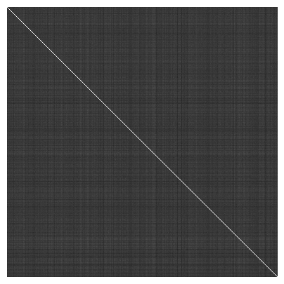

Show code cell content
df = pd.read_csv("../restricted_data/processed.csv")
subjects_without_scans = np.loadtxt("../data/subjects_without_dwi_t1.txt", dtype=int)
df = df[~df.Subject.isin(subjects_without_scans)]
subjects_with_connectomes = np.loadtxt(
"../data/subjects_with_all_connectomes.txt", dtype=int
)
df = df[df.Subject.isin(subjects_with_connectomes)]
df.sort_values("Subject", inplace=True)
# remove singletons
uniques, counts = np.unique(df.Family_ID, return_counts=True)
singletons = []
for unique, count in zip(uniques, counts):
if count == 1:
sub = df[df.Family_ID == unique].Subject.iloc[0]
singletons.append(sub)
singleton_idx = df.Subject.isin(singletons).values
df = df[~singleton_idx]
male_idx = df.Gender == "M"
female_idx = df.Gender == "F"
df.to_csv("../restricted_data/944subjects.csv", index=False)
import pandas as pd
df = pd.read_csv("../restricted_data/944subjects.csv")
subjects = df.Subject.astype(str).values
from itertools import combinations
from graspologic.embed import *
from joblib import Parallel, delayed
from pkg.data import load_dataset
from pkg.inference import difference_norm
parcellation = "Glasser"
graphs = load_dataset(parcellation=parcellation)
graphs = {key: val for key, val in graphs.items() if key in subjects}
def compute_connectome_distances(subjects, graphs, workers=81):
"""
subjects : list
graphs : dict
"""
subs = [str(s) for s in subjects]
zg = Parallel(n_jobs=workers)(delayed(select_dimension)(g) for g in graphs.values())
n_components = int(np.max(zg))
def worker(G, H, n_components):
X = AdjacencySpectralEmbed(
n_components=n_components, check_lcc=False
).fit_transform(G)
Y = AdjacencySpectralEmbed(
n_components=n_components, check_lcc=False
).fit_transform(H)
res = [difference_norm(X, Y, model) for model in ["exact", "global", "vertex"]]
return res
cartesian_prods = list(combinations(subs, 2))
distances = Parallel(n_jobs=workers)(
delayed(worker)(graphs[u], graphs[v], n_components) for u, v in cartesian_prods
)
distances = np.array(distances)
return distances
connectome_distances = compute_connectome_distances(subjects, graphs)
np.savez_compressed(
f"../results/{parcellation}_connectome_distances",
exact=connectome_distances[:, 0],
glob=connectome_distances[:, 1],
vertex=connectome_distances[:, 2],
)
from scipy.spatial.distance import squareform
exact = squareform(connectome_distances[:, 0])
exact.shape
(944, 944)
from pkg.plot import heatmap
exact.min()
0.0
exact.max()
13.539416922471734
heatmap(exact)

def compute_genome_distances(subjects, df, workers=81):
"""
subjects : list
df : pd.DataFrame
0 = MZ, 1 = NotTwin/DZ, 2 = non-twin sibling, 3 = step-sibling, 4 = unrelated.
"""
subs = [int(s) for s in subjects]
cartesian_prods = list(combinations(subs, 2))
rel_dict = dict(MZ=0, DZ=1, NotTwin=2, Step=3, Unrelated=4)
def worker(u, v, df):
subs = df[df.Subject.isin([u, v])]
fdx1, mdx1, fdx2, mdx2 = subs[["Father_ID", "Mother_ID"]].values.ravel()
zyg1, zyg2 = subs[["Zygosity"]].values.ravel()
# below checks if same family
if (fdx1 == fdx2) and (mdx1 == mdx2):
if zyg1 == zyg2:
dist = rel_dict[zyg1]
elif zyg1 != zyg2:
dist = rel_dict["NotTwin"]
elif (fdx1 != fdx2) or (mdx1 != mdx2):
dist = rel_dict["Step"]
elif (fdx1 != fdx2) and (mdx1 != mdx2):
dist = rel_dict["Unrelated"]
else: # stepsib
raise ValueError()
return dist
cartesian_prods = list(combinations(subs, 2))
distances = Parallel(n_jobs=workers)(
delayed(worker)(u, v, df) for u, v in cartesian_prods
)
return np.array(distances)
genome = compute_genome_distances(subjects, df)